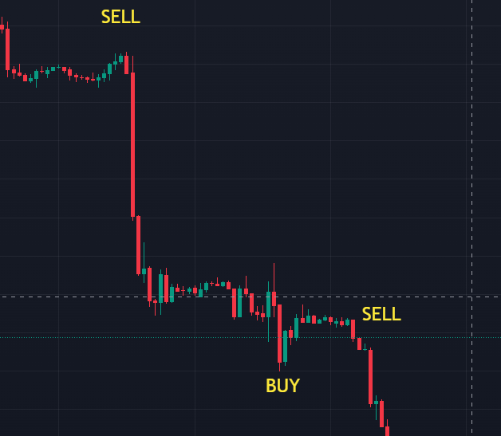
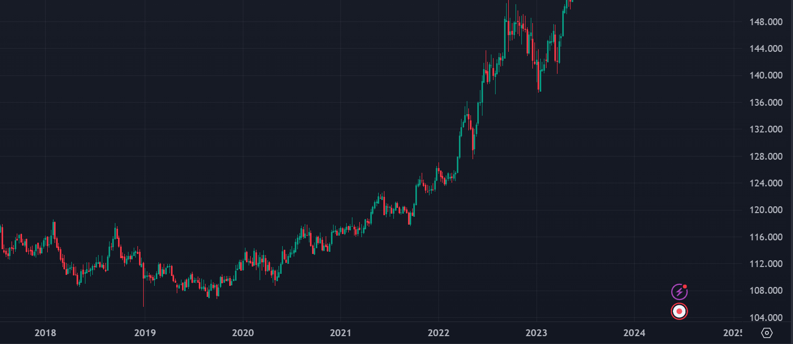

Trading Strategies
Trading strategies in the forex market are systematic approaches that traders use to determine when to buy or sell currency pairs. These strategies can be based on technical analysis, fundamental analysis, or a combination of both. Successful trading strategies help traders manage their risks, maximize their profits, and make consistent trading decisions. In this section, we'll explore several popular trading strategies used in the forex market.
Types of Trading Strategies
Scalping:
Scalping is a short-term trading strategy that involves making multiple trades throughout the day to take advantage of small price movements. Scalpers aim to make quick profits by exploiting tiny price gaps, often holding positions for just a few seconds to a few minutes.
Pros: Can generate many small profits throughout the day; less exposure to market risk due to short holding periods.
Cons: Requires constant monitoring of the market; high transaction costs due to frequent trading.
Example: A trader might use a 1-minute or 5-minute chart to identify a trend, then enter and exit trades quickly to capture small price movements.
Day Trading:
Day trading involves buying and selling currencies within the same trading day to capitalize on short-term price movements. Unlike scalping, day traders typically hold positions for several minutes to a few hours.
Pros: No overnight risk as positions are closed by the end of the trading day; potential for significant profits from intraday price movements.
Cons: Requires a lot of time and attention; can be stressful due to the fast-paced nature of the market.
Example: A day trader might use technical indicators like moving averages and Bollinger Bands to find trading opportunities within the daily timeframe.

Swing Trading:
Swing trading is a medium-term strategy that involves holding positions for several days to a few weeks to profit from expected market swings. Swing traders look for price patterns and trends that indicate potential reversals or continuations.
Pros: Less time-intensive than day trading; opportunities to capture larger price movements.
Cons: Exposure to overnight and weekend market risk; requires patience and discipline to wait for setups.
Example: A swing trader might use technical patterns like head and shoulders or Fibonacci retracements to enter trades at key levels.
Position Trading
Position trading is a long-term strategy where traders hold positions for weeks, months, or even years. This strategy focuses on the big picture and long-term trends rather than short-term price fluctuations.
Pros: Lower transaction costs due to fewer trades; less need for constant market monitoring.
Cons: Requires a strong understanding of fundamental analysis; exposure to long-term market risk.
Example: A position trader might base their trades on macroeconomic trends, interest rate differentials, and geopolitical events.
Conclusion
Trading strategies are essential for forex traders as they provide a structured approach to making trading decisions. Whether you're a short-term scalper, a day trader, a swing trader, or a long-term position trader, having a well-defined strategy helps manage risk and maximize profits. By understanding and implementing various trading strategies, traders can navigate the forex market more effectively and increase their chances of success.